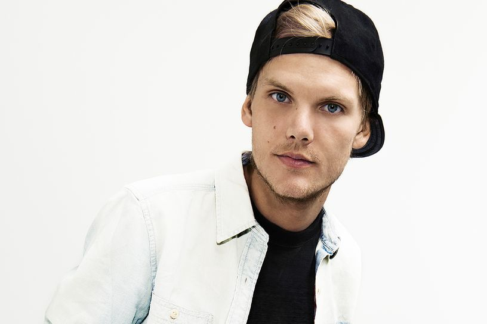
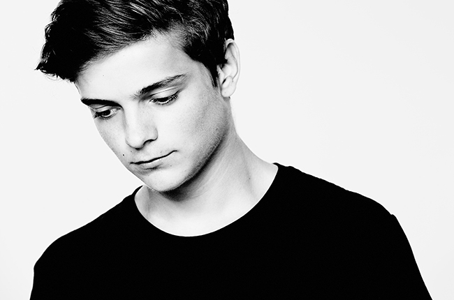
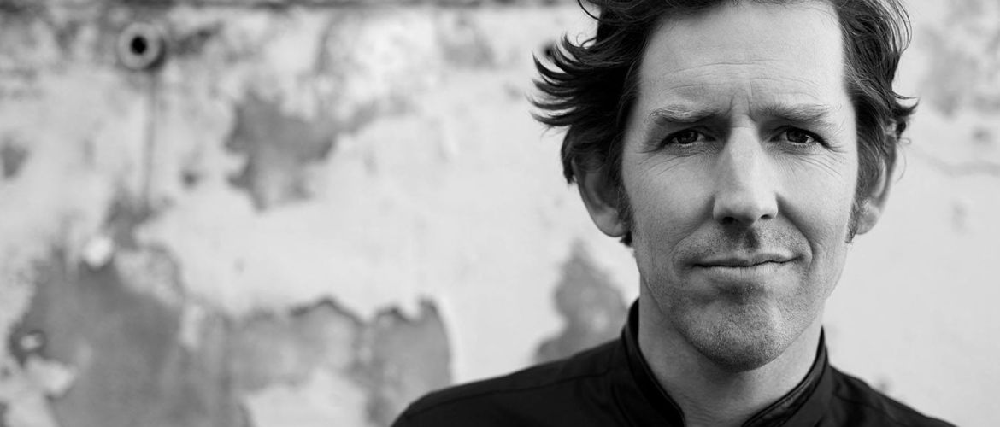

9/6
kl 20.30
Eminem

Marshall Bruce Mathers III (født 17. oktober 1972 i Saint Joseph i Missouri), bedre kjent under artistnavnet Eminem og tidligere kjent under navnet Slim Shady, er en amerikansk rapper. Han har vunnet Grammy- og Oscarpriser for musikken sin. Han har også hatt roller i filmene 8 Mile og The Interview. Artisten har fått mye oppmerksomhet på grunn av tekstene sine. I 2014 satte han verdensrekord på antall ord i en låt i hit-sangen «Rap god». Sangen inneholder 1 560 ord, mer enn fire ord i sekundet i den 6 minutter lange sangen, og fikk Eminem inn i Guinness Book of Records.
kl 22.45
Avicii
Tim Bergling (født 8. september 1989), mer kjent som Avicii og Tim Berg, er en svensk DJ, remixer og albumprodusent. Hans debutalbum Seek Bromance nådde topp 20-listene i mange land, inkludert Frankrike, Belgia, Storbritannia og Sverige. I 2011 ga Avicii ut Levels, som var på topp 10-listene i mange land, og til og med toppet listene i Ungarn, Norge og Sverige. Desember 2012 gjentok han suksessen med sangen I Could Be the One med Nicky Romero som toppet listene i Storbritannia. Ikke lenge etter, i juni 2013, kapret han topplistene igjen med sangen Wake Me Up, som er en del av albumet True. I juli 2013 slapp han også singelen Speed, som ikke var en del av albumet, men en sang produsert sammen med Lotus og Burn. 16. august 2013 var det Radio 1-premiere på den nye singelen til Avicii, You Make Me som er den andre singelen i albumet.
10/6
kl 21.00
Martin Garrix
Martijn Gerard Garritsen, bedre kjent under artistnavnet Martin Garrix, er en nederlandsk DJ, plateprodusent og musiker. Han er rangert som nummer 1 på DJ Mag Top 100 DJ liste for 2016. I 2016 grunnla han etiketten STMPD RCRDS måneder etter at han forlot Spinnin 'Records.
kl 23.00
Overskrift
Odd Nordstoga (født 10. desember 1972) er en norsk musiker, sanger og komponist fra Vinje i Telemark. Han er kjent som soloartist og for sitt samarbeid med andre artister som Sissel Kyrkjebø. Han har vunnet flere priser, og ble kåret til Årets spellemann under Spellemannprisen 2004. Nordstoga fikk sitt store gjennombrudd i 2004 med soloalbumet Luring. Albumet, som en blanding av populærmusikk og tradisjonell folkemusikk og med tekster på nynorsk, har solgt 160 000 eksemplarer i Norge.